Manual de Instalación
Al instalar vidrioblock surgen dos obstáculos principales a vencer para lograr una instalación adecuada.
Los páneles que se forman con vidrioblock no son estructurales y una carga de viento o de otro tipo los puediera afectar.
Debido a los movimientos de dilatación de las construcciones y por la naturaleza misma del vidrio, el vidrioblock pasa por uan fase elástica a una de ruptura sin pasar por una fase plástica intermedia, típica de otros materiales de construcción como productos de cemento, arcillas o metales.
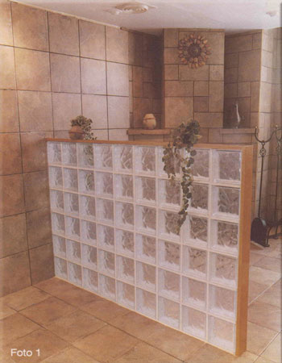
Creaciones Prácticas le ofrece esta guía de instalación, en la que le mostramos como se instala el vidrioblock usando los materiales necesarios para:
- Lograr paneles de vidrioblock con una estructura que resista las diferentes cargas que puedieran actuar sobre el panel.
- Lograr paneles de vidrioblock donde se pueda amortiguar las tensiones de ruptura en los vidrioblocks, provocadas por los movimientos de dilatación de la construcción.
La foto 1 muestra un panel de vidrioblock, instalada y terminado con productos de Creaciones Prácticas.
La foto 2 muestra los seis productos para instalación de vidrioblock:
- Anclaprac: Lámina galvanizada para anclar el panel de vidrioblock a los muros laterales y al techo.
- Viseprac: Separador, que como su nombre lo indica, sirve para lograr una separación adecuada entre vidrioblocks y que se pueda distribuir en esos espacios el mortero que pega los vidrioblocks.
- Expaprac: Tira de expansión para amortiguar las tensiones de ruptura en los páneles de vidrioblock.
- Alamprac: Alambre galvanizado que se utiliza verticalmente para darle soporte y estructura a los páneles de vidrioblock.
- Unionprac: Uniones de cobre que se utilizan para unir los extremos de los soporpracs y de los alampracs.
- Sorporprac: Escalera de alambre galvanizado que se utiliza horizontalmente para darle soporte y estructura a los páneles de vidrioblock.
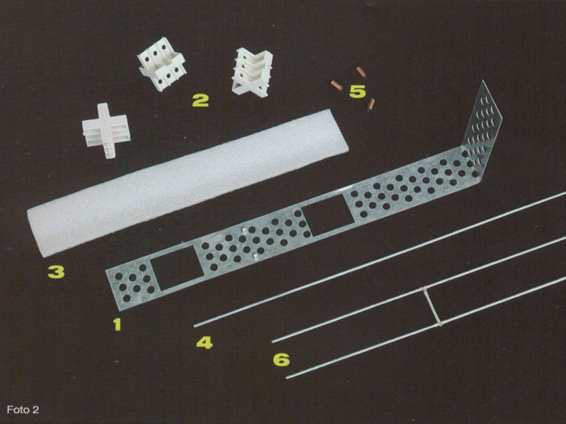
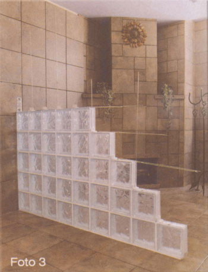
La foto 3 muestra un panel de vidrioblock en proceso de instalación, usando los productos de Creaciones Prácticas.
La primer hilera de vidrioblocks del panel se pega con mortero al piso. Para nivelar los vidrioblocks del panel aseg&uacte;rese de golpearlos con algún martillo de cabeza de plástico ya que una herramienta metálica puede causar fracturas en el vidrioblock que van a ser visibles tiempo después.
Para darle soporte y una estructura integral al panel, como mínimo en cada 2 hileras del panel, instale el soporprac, y como mínimo en cada 2 filas del panel instale el alamprac. Para anclar el alamprac al piso, taladre en el piso con broca de cemento un agujero de alrededor de 10 cm. de profundidad e introduzca ahí el alamprac y embébalo con el mortero en el agujero.
El viseprac se instala en cada intersección de vidrioblocks, su lado hueco siempre se coloca en posición horizontal y su otro lado con 6 orificios en posición vertical tal como lo mustras la foto 4.
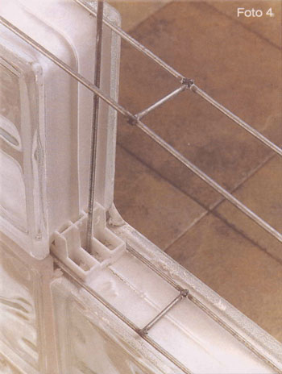
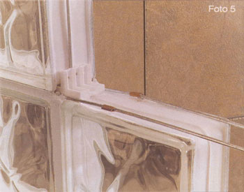
El unionprac une los extremos de los soporprac cuando el largo del panel es mayor al largo del soporprac, así como lo muestra la foto 5.
Usando una pinza de presión, apriete el unionprac en la orilla y forme una especie de ceja de presión que embona las puntas de los alambres a unir.
El alamprac también se une con los unionpracs.
Si el vidrioblock que empieza en el muro lateral es pieza completa, el anclaprac se dobla a 90 grados en la posición marcada, así como lo muestra la foto 6.
El anclaprac, en su parte horizontal, se debe colocar sobre los vidrioblocks dejando pasar los primeros 2 visepracs pegados al muro por sus 2 huecos grandes.
La parte vertical del ancla, como su nombre lo indica, se ancla al muro usndo un par de taquete y tornillos.
Si el vidrioblock que empieza en el muro lateral, es una pieza cortada, el anclaprac se debe doblar a 90 grados donde permita que los 2 primeros visepracs pegados al muro se acomoden en los 2 huecos grandes del anclaprac.
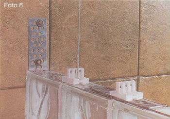
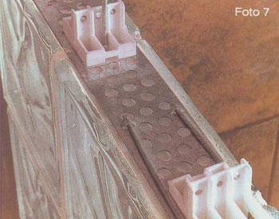
Afianze el soporprac al anclaprac introduciendo como máximo 1 cm los extremos del soporprac en los ganchos del anclaprac tal como lo muestra la foto 7.
Para que los movimientos de dilatación de la construcción no afecten al vidrioblock, se debe dejar un espacio entre el panel y los muros laterales y entre el panel y el techo. En este espacio se coloca el expaprac, material esponjoso que amortigua las tensiones de ruptura provocadas por esos movimientos de dilatación.
Sobre la parte vertical del anclaprac se pega el expaprac utilizando silicón como lo muestra la foto 8. El expaprac viene cortado en tiras de 40 cm. para instalaciones de soporprac y anclaprac en cada 2 hileras. Para instalaciones de soporprac y anclaprac en cada hilera, corte el expaprac a la mitad.
Es muy importante que el expaprac quede colocado a todo lo largo de los muros laterales y del techo del panel.
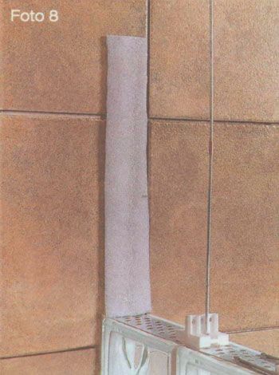
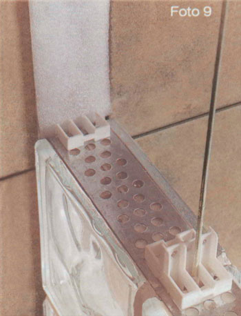
Como el viseprac que va pegado al muro no cabe, corte uno de sus lados y utilícelo en su lugar así como se muestra en la foto 9.
En cada hilera ya pegada, entre cada 2 visepracs extienda el mortero para recibir al vidrioblock de la siguiente hilera tal como se muestra en la foto 10.
Al vidrioblock que va pegado al muro, no se le pone mortero en su lado vertical. A todos los demás vidrioblocks de la hilera a pegar, se le embarra mortero al lado que va a entrar en contcto en su lado vertical con el vidrioblock anterior, recién pegado.
Limpie el exceso de mortero de la superficie de los vidrioblocks, y usando una boquilla antihongos, del color que usted escoja, emboquille todas las juntas, dejando boquillas lisas y uniformes.
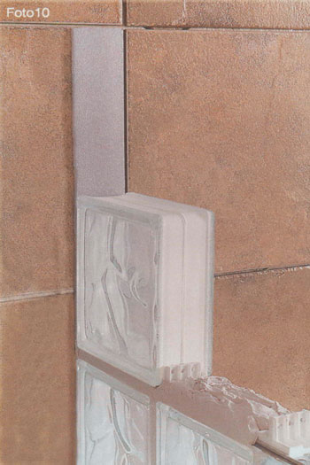
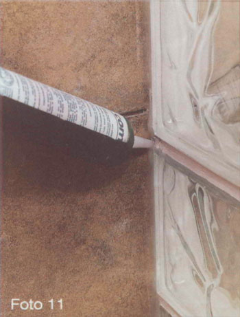
No utilice mortero para pegar el vidrioblock a los muros laterales y al techo.
La orilla de los vidrioblocks pegados al muro se deben rellenar con silicón. Así como se muestra en la foto 11.
Antes de que seque el silicón, distribuirlo perfectamente en la orilla dejando un acabado liso y uniforme.
Continúe instalando las hileras de vidrioblock hasta llegar al techo.
Si la última hilera de vidrioblock que pega con el techo no cabe en el espacio resultante se tienen 2 opciones para terminar.
Se pueden cortar los vidrioblocks de esa hilera con una cortadora de agua para azulejo a la medida requerida para que quepan, o se puede bajar un muro de tablaroca del techo a la última hilera de vidrioblock del panel.
No afiance el alamprac al techo. El extremo del alamprac pegado al techo sólo queda flotando en el mortero.
No instale el anclaprac en la última hilera del vidrioblock pegado al techo, pero si instale el expaprac entre los vidrioblock de esa hilera y el techo.
No pegue con mortero esta última hilera de vidrioblock al techo, termine con silicón la orilla de esta hilera, cuidando de extender el silicón uniformemente antes de que seque.
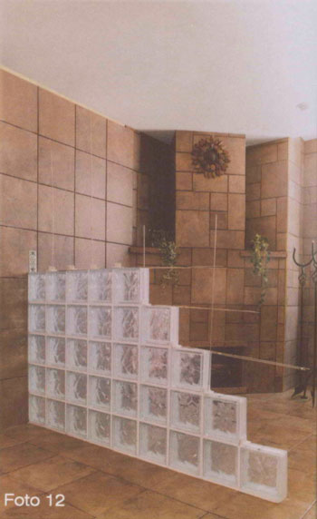
Notas Finales
No se recomienda instalar paneles de más de 3.3 m. de largo por 3.3 m. de altura o bien paneles de más de 10 metos cuadrados.
Si el panel es mayor a las medidas anteriores, utilice una columna de soporte de concreto o de acero que divida el panel en el espacio recomendado, e instale el vidrioblock que pega en ese soporte como si fuera un muro lateral o techo, según sea el caso.
Al ser los soporpracs y alampracs de alambre galvanizado, el anclaprac de lámina galvanizada y los unionpracs de cobre, se evita que estos productos se lleguen a oxidar y lleguen a manchar el mortero blanco de las boquillas.
El viseprac permite por su lado horizontal hueco y por sus orificios del lado vertical, que atraviese el mortero, formándose una especie de clavos de cemento que evitan que se forme un hueco sin mortero que debilita la estructura del panel.
Nunca use los paneles de vidrioblock como muros cargadores.
En instalaciones curvas, utilice el soporprac donde lo permita la curvatura del panel, y en donde no, usar en su lugar 2 alampracs, los cuales se pueden flexionar a la curvatura deseada.
Como mortero pueden utilizar el denominado adhesivo piso sobre piso y como boquilla, la denominada boquilla antihongos, que los provedores de adhesivos de pisos y azulejos ofrecen en el mercado.
Cuando por diseño, un panel de vidrioblock empieza en un muro pero no llega al otro muro, se puede terminar la orilla de varias formas. Usando un remate de madera, o usando piezas de piso o azulejo cerámico, mármol o granito, cortadas al ancho y largo del vidrioblock con perfiles de plástico o aluminio (tiraprac). Al no tener sostén de anclaprac a ambos lados del panel, en estos paneles no hay garantía de instalación.